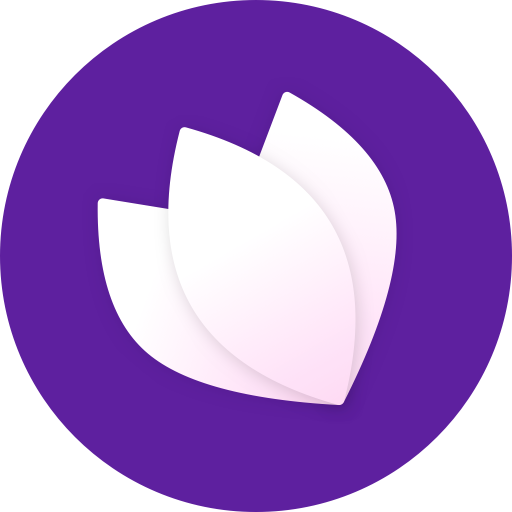

Musashi Tsunoda
Web Application Engineer
Professional Summary
Web Application Engineer with 5+ years of experience across web and mobile development. At Commune, I work in TypeScript across community SaaS feature development and in-house shared infrastructure — including designing an OAuth2.0 / OIDC authentication platform and a cross-product API authorization layer from scratch. Previously built EC SaaS systems in Java at e-ize. Also ship Flutter/Dart mobile apps independently, including a boxing scorecard app with 10,000+ downloads. Google Professional Cloud Architect certified.
Work Experience
Web Application Engineer · Commune
Aug. 2023 – PresentFull-stack development on a community SaaS platform (BtoBtoC) and in-house shared infrastructure, spanning feature development to designing authentication and authorization systems across multiple products.
- Developed features for a community SaaS in a 4-person scrum team — new API design, frontend components, E2E tests, and LLM feature integration
- Designed and built a shared authentication infrastructure (OAuth2.0 / OIDC) from scratch for 2–5 in-house products as a 2-person team
- Built a cross-product API authorization infrastructure using Hydra (Ory) as an OAuth2.0 authorization server; developed internal npm SDKs for easy adoption by other teams
- Set up company-wide error monitoring (Sentry + Slack); automated triage via Claude Code × MCP, significantly reducing on-call workload
- TypeScript
- Node.js
- Express
- React
- Next.js
- Hono
- MySQL
- PostgreSQL
- GCP
- Terraform
- Docker
Full-stack Developer · e-ize Co. Ltd.
Apr. 2021 – Mar. 2023Full-stack engineer on an EC SaaS platform renewal project. Worked in a team of 6 engineers on design, development, testing, and maintenance across frontend, backend, and infrastructure.
- Automated CI/CD pipeline with GitHub Actions for frontend, backend, and batch — eliminating manual deployment errors and significantly cutting release time
- Added 2 new payment methods to the EC platform, handling differing settlement timing and refund rules across providers
- Improved unit test coverage to 80%+ across the codebase; enforced test-result reporting on all pull requests
- Implemented responsive design for the admin dashboard, enabling access from smartphones and tablets
- Java
- JavaScript
- Spring Boot
- Vue.js
- Nuxt.js
- MySQL
- Docker
- AWS
- JUnit
- Jest
Engineer Intern · e-ize Co. Ltd.
Dec. 2019 – Mar. 2021First software engineering experience as an intern while completing my master's degree, contributing to both front-end and back-end development of the EC SaaS platform.
- Contributed to frontend feature development using Vue.js and Nuxt.js
- Participated in backend development with Spring Boot and code reviews
- Gained hands-on experience with Docker-based development environments and AWS deployments
- Java
- JavaScript
- Spring Boot
- Vue.js
- Nuxt.js
- MySQL
- Docker
- AWS
Education
- Apr. 2019 – Mar. 2021
Master of Engineering — Electrical Engineering and Computer Science
Shibaura Institute of Technology
Tokyo, Japan · GPA 4.0
- Apr. 2015 – Mar. 2019
Bachelor of Engineering — Electronic Engineering
Shibaura Institute of Technology
Tokyo, Japan
Certifications
- Nov. 2024
Professional Cloud Architect
Google Cloud
Projects
SCORE BOX
Mobile appA mobile app for creating and sharing boxing match scorecards. Over 10,000 downloads across the App Store and Google Play.
- Dart
- Flutter
- Firebase
- SQLite

Mokuren
Chrome extensionA Chrome extension for GitHub that lets you open issue pages in a sidebar. Built with friends.
- TypeScript
- Vue.js
- Jest
- Cypress
Cupertino Catalog
Mobile appA mobile app for Flutter developers to browse Cupertino (iOS-style) widgets and their code examples.
- Dart
- Flutter
- SQLite
Articles
- Effect TSのCache.makeで作る「賢いキャッシュ」入門
May 25, 2026
- Apple IntelligenceのFoundation ModelをFlutterから簡単に使う
Dec 17, 2025
- SentryのIssueの容疑者をSlackで個別メンションしてみた
Mar 30, 2025
- 個人的によく使うGitHub CLIコマンドまとめ
Dec 5, 2024
- streamは明示的に閉じておこう [Node.js]
May 22, 2024
- 「誰のためのPWA?」- PWAのメリット・デメリットについて考えてみた
Feb 14, 2024